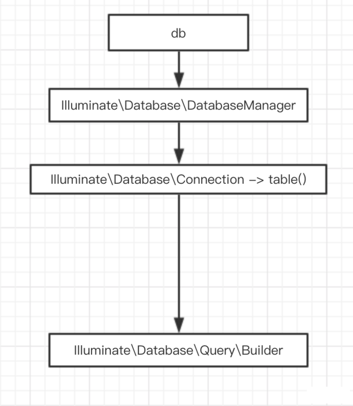
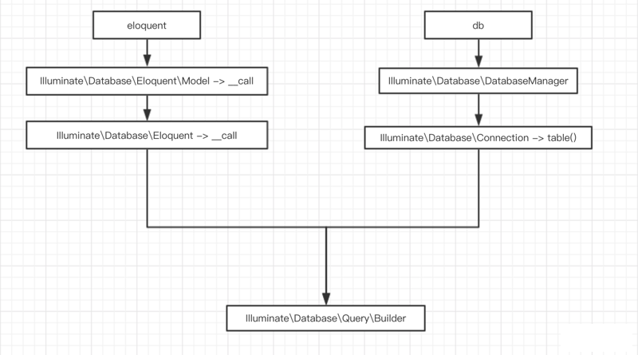

原文连接:https://www.cnblogs.com/it-3327/p/11798149.html
本篇文章给大家带来的内容是关于Laravel源码解析之model（代码），有一定的参考价值，有需要的朋友可以参考一下，希望对你有所帮助。
前言
提前预祝猿人们国庆快乐，吃好、喝好、玩好，我会在电视上看着你们。
根据单一责任开发原则来讲，在laravel的开发过程中每个表都应建立一个model对外服务和调用。类似于这样
|
1 2 3 4 5 6 7 8 |
|
解析
Laravel的数据操作分两种
-
DB facade
-
Eloquent ORM
它们除了有各自的特色外，基本的数据操作都是通过 Illuminate\Database\Query\Builder 调用方法去完成整个SQL。你也可以帮Builder这个类作为整个SQL操作的基类。这个类涵盖了以下的操作方法(部分展示)
| 方法 |
|---|
public function select($columns = ['*']) |
public function selectSub($query, $as) |
public function selectRaw($expression, array $bindings = []) |
public function fromSub($query, $as) |
public function fromRaw($expression, $bindings = []) |
public function addSelect($column) |
public function distinct() |
public function from($table) |
public function join($table, $first, $operator = null, $second = null, $type = 'inner', $where = false) |
public function joinWhere($table, $first, $operator, $second, $type = 'inner') |
public function joinSub($query, $as, $first, $operator = null, $second = null, $type = 'inner', $where = false) |
public function leftJoin($table, $first, $operator = null, $second = null) |
public function where($column, $operator = null, $value = null, $boolean = 'and') |
public function orWhere($column, $operator = null, $value = null) |
public function whereRaw($sql, $bindings = [], $boolean = 'and') |
public function whereIn($column, $values, $boolean = 'and', $not = false) |
public function orWhereIn($column, $values) |
可见有很多方法在中国laravel站或者官方文档上都没有体现，所以说就算要精通一款框架，不去看它的源码也是不行的。这个文件在你项目目录中的 vendor/laravel/framework/src/Illuminate/Database/Query 下，你可以自行去查看。


链接：https://pan.baidu.com/s/1v5gm7n0L7TGyejCmQrMh2g 提取码：x2p5
免费分享，但是X度限制严重，如若链接失效点击链接或搜索加群 群号518475424。
DB facade
正常情况下你可能会这样写一个操作
|
1 |
|
这个操作首先经过laravel的门面指向文件,不过它并不在 app.php 中，而是通过内核直接加载，它在
|
1 |
|
被注册。门面直接调用 Illuminate\Database\DatabaseManager 类。
|
1 2 3 4 5 6 7 8 9 10 11 12 |
|
Illuminate\Database\DatabaseManager 内并没有太多的代码，大多都是处理数据库链接。当你使用 DB::table()时，会通过
|
1 2 3 4 |
|
转发,调用的是 Illuminate\Database\Connection ，用户处理 table() 方法，随后会通过 table() 方法指向 Illuminate\Database\Query 类，开头我们讲过这个类了，这里就不多说了，随后就是各种sql的拼接->执行sql->结束战斗

Eloquent ORM
Eloquent ORM 与DB facade 类似，首先每个 Eloquent ORM 都需要继承父类 Illuminate\Database\Eloquent\Model
你大概会这样写
|
1 |
|
父类是不存在这个方法的，它会通过
|
1 2 3 4 |
|
去转发请求调用。同理
|
1 |
|
则是通过
|
1 2 3 4 5 6 7 8 |
|
去调用，这个方法最终以 new Builder() 而告终，
|
1 2 3 4 |
|
最后我们到了 Illuminate\Database\Eloquent\Builder 文件下，这个类中涵盖了ORM的基本操作，例如find , findOrFail 等等。如果你在代码用到了get方法，抱歉，这里没有，它依旧会通过__call 方法将你的请求转发到 Illuminate\Database\Query\Builder 类中
|
1 |
|
至此就完成了整个数据操作。

以上就是Laravel源码解析之model（代码）的详细内容